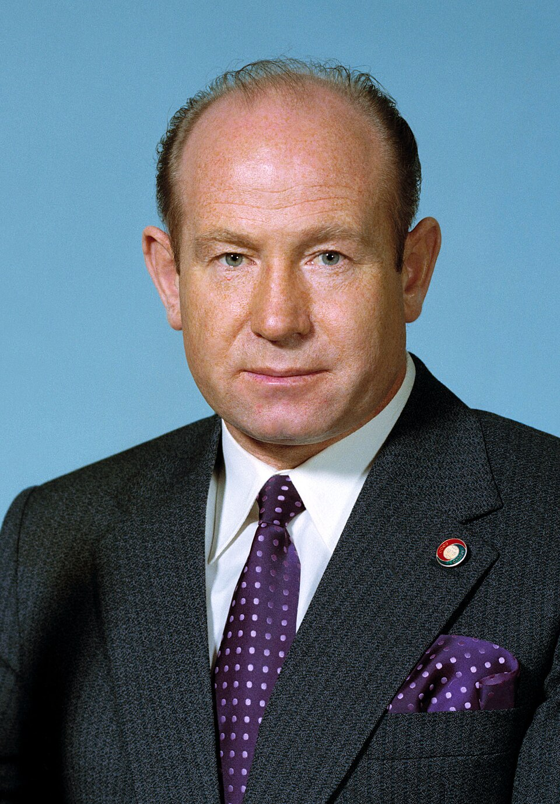
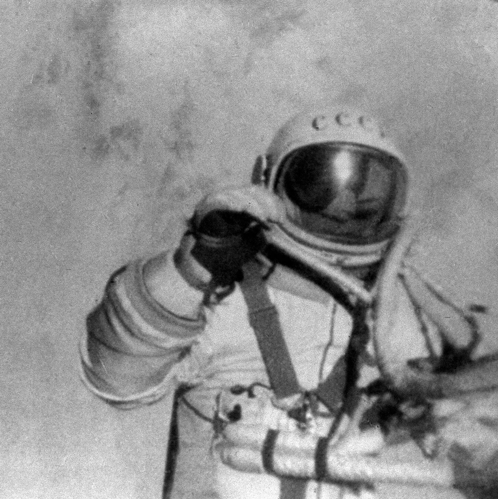

Алексей Архипович Леонов

Алексей Архипович Леонов — лётчик-космонавт СССР, первый человек в мире, вышедший в открытый космос. В 1960 году был зачислен в первый отряд советских космонавтов. В 1963 году был вторым дублёром Валерия Быковского при подготовке полёта «Востока-5». 18—19 марта 1965 года совместно с Павлом Беляевым совершил полёт в космос в качестве второго пилота на космическом корабле «Восход-2». В ходе полёта осуществил первый в истории космонавтики выход в открытый космос, проявив при этом исключительное мужество, особенно во в нештатной ситуации, когда раздувшийся космический скафандр препятствовал его возвращению в космический корабль
